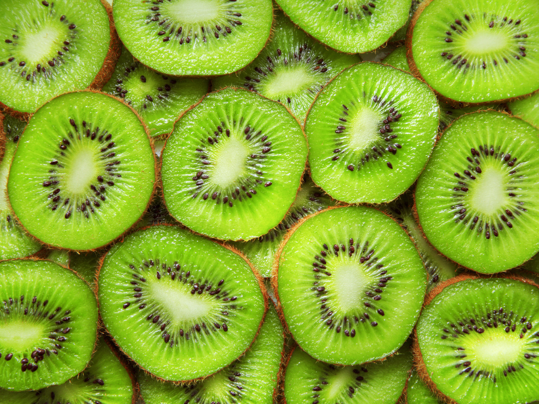

New Zealand's national bird.
Kiwis are not your typical bird. They are sometimes called ‘honorary mammals’ because of their strange mammalian traits. Unlike most birds, kiwis have heavy bones filled with marrow. Their powerful legs make up a third of their body weight and allow them to run as fast as a human. Kiwis also have cat-like whiskers and shaggy plumage that is more like hair than feathers.
Kiwis have highly developed senses of smell and touch, whereas most birds rely on sight as their primary sense. They are the only bird in the world to have nostrils at the end of their beak, which enables them to sniff out food in leaf litter and even beneath the soil.
Kiwi birds put a lot of energy into incubating eggs - it takes around 80 days for them to hatch. This is more than twice the typical length of time for birds, closer to the gestation period of small mammals. Once the female kiwi lays her egg, the male sits on the egg until it hatches so the female can forage for food. Because the egg has taken up so much room in her body, her stomach has shrunken so much that she desperately needs to replenish herself.
There are five species of kiwi: the tokoeka, the rowi, the roroa or great spotted kiwi, the pukapuka or little spotted kiwi, and the North Island brown kiwi.
